News
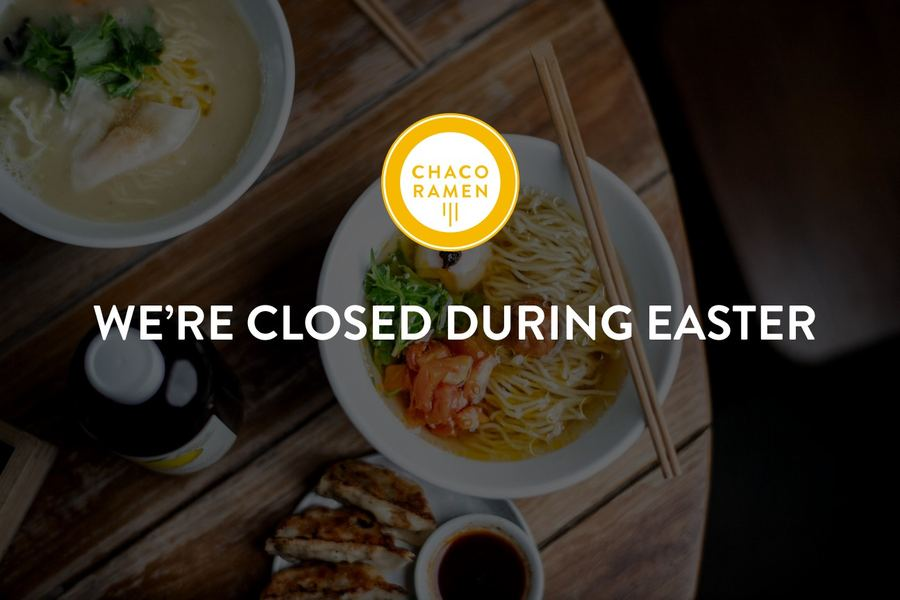
13 April 2022
We’re closed during Easter – We will be taking a short break from the 15th to 18th April so our team members can enjoy time with their loved ones. We wish everyone a happy Easter!
A design proposal for Chaco Ramen (not the official website)
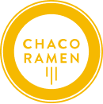
Open since 2014Bondi Beach
The bowls
We are passionate and proud to serve signature ramen that are based on classic technique but with a modern twist, making them all unique and memorable.
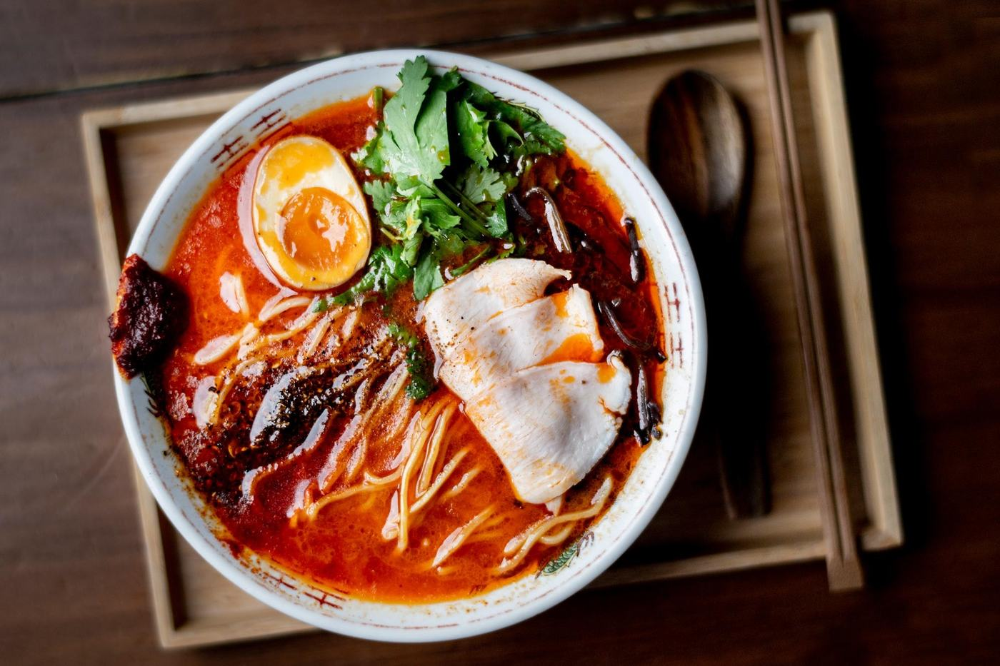
Take home
Taking a frozen ramen pack home? Watch how to put the bowl together. The packs on sale are listed under “Take Home” in each venue’s menu above.
About us
Open since 2014, Chaco Ramen was born out of Keita Abe’s love for Yakitori and Ramen. We aim to be leaders of ramen culture in Sydney and Australia through original and most importantly tasty ramen that is close to the heart.
We are passionate and proud to serve four types of signature ramen that are based on classic technique but with a modern twist making them all unique and memorable like the Chilli Coriander or Yuzu Scallop ramen.
Our Darlinghurst venue is the original birthplace of Chaco Ramen (formally known as Chaco Bar) offering a ramen focused menu with sides and drinks.
Bondi Beach is our newest venue offering a more extensive menu that includes your usual suspects but more nibbles and Yakitori.
So do yourself a favour and come try a bowl today!
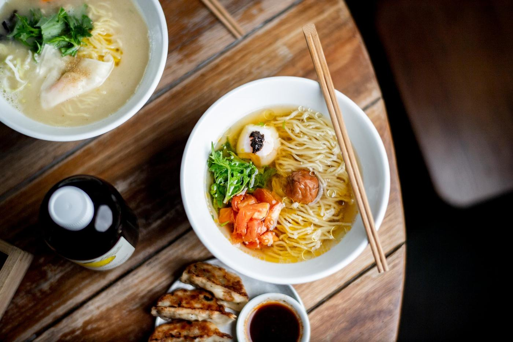
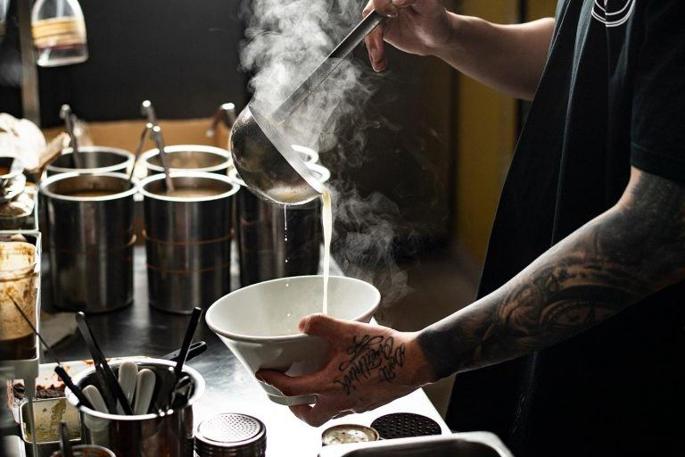
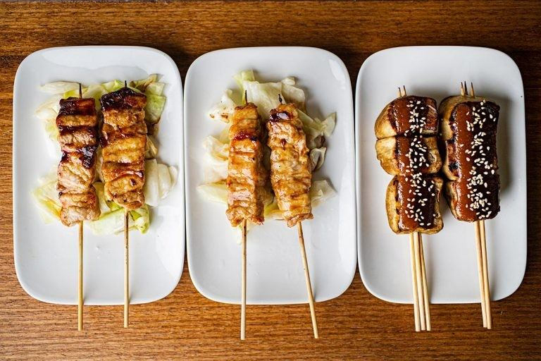
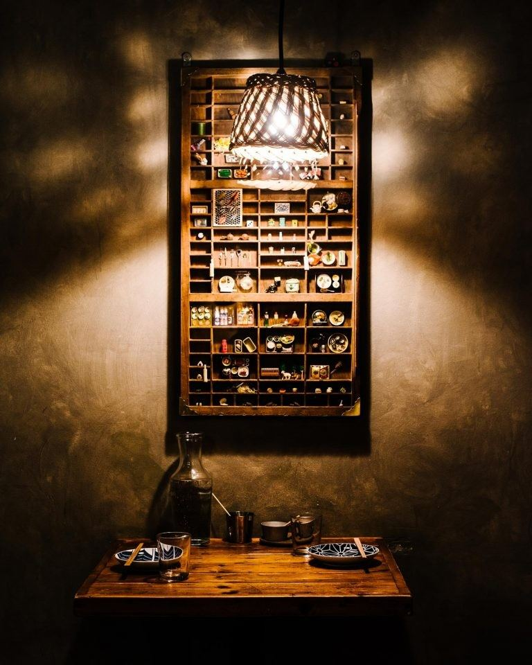
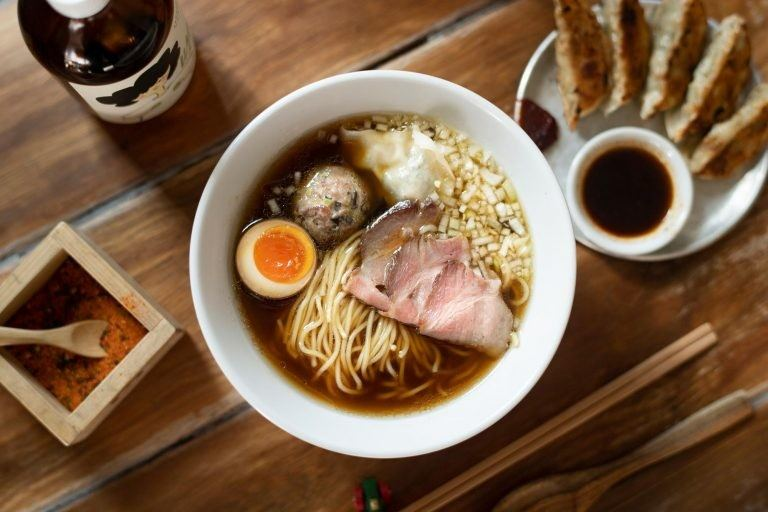
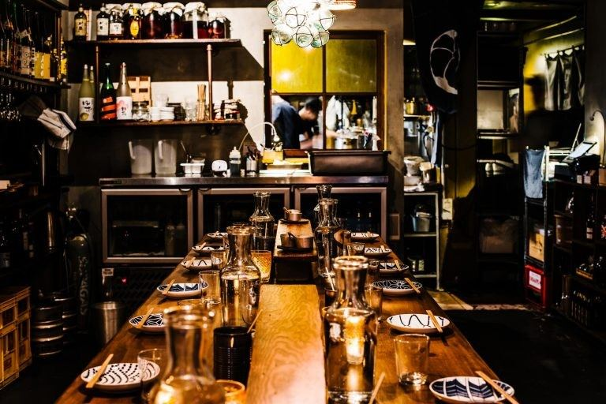
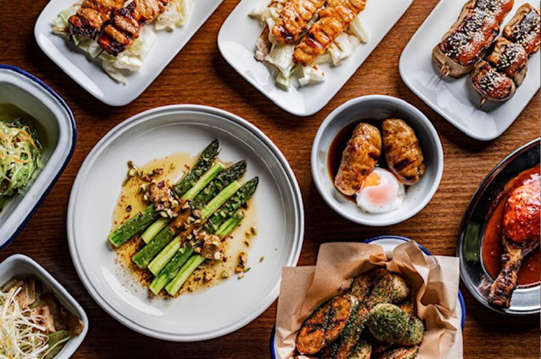
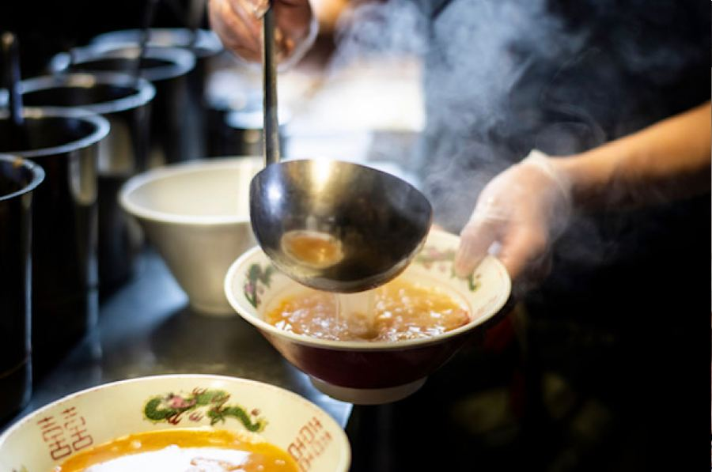
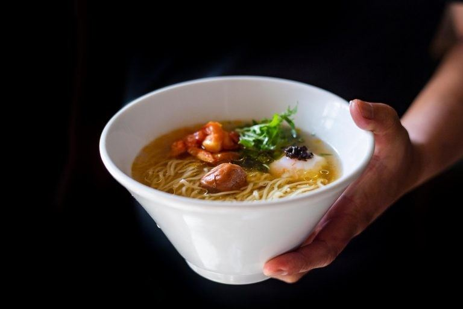
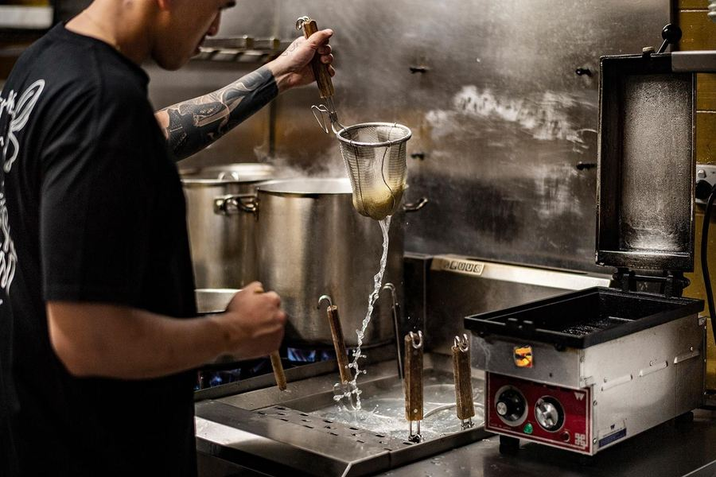
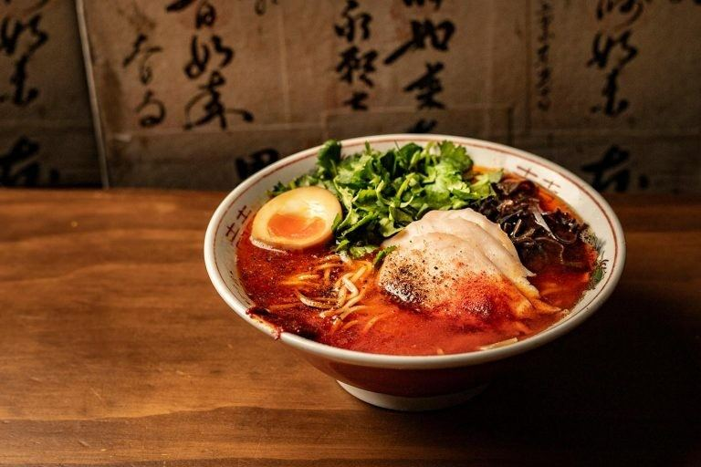
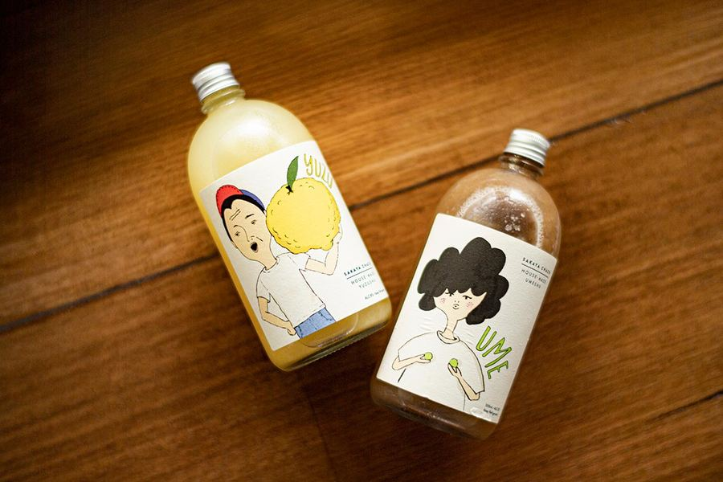
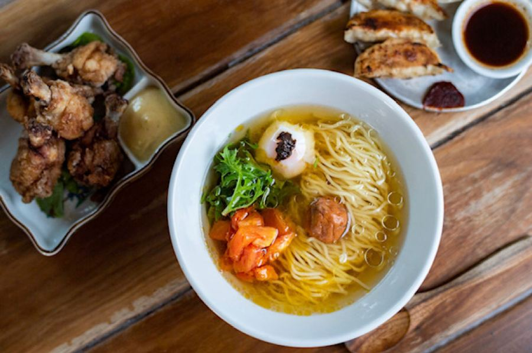
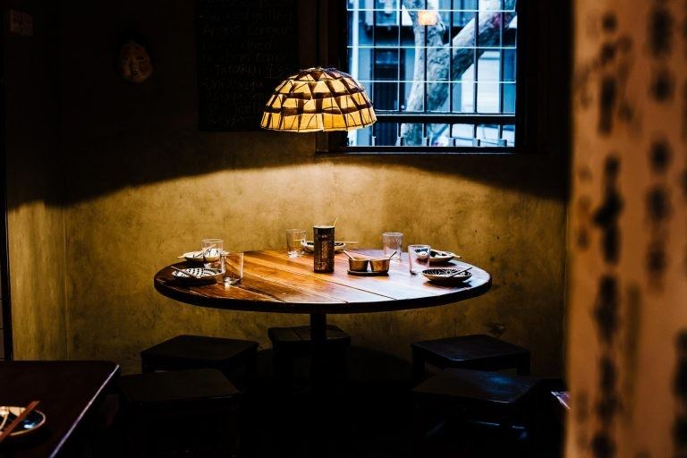
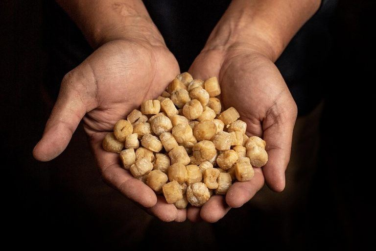
Shops
News

13 April 2022
We’re closed during Easter – We will be taking a short break from the 15th to 18th April so our team members can enjoy time with their loved ones. We wish everyone a happy Easter!
Careers
Chaco Ramen Darlinghurst and Bondi Beach welcomes you to join our team.
We are at the forefront of Ramen culture in Sydney, Australia and continue to lead by offering original bowls of ramen and dishes that go against the grain or with a modern twist.
We hope to deliver our unique business to other counties including New Zealand, South East Asia and beyond.
Various roles and opportunities are available and for the right people we will provide skills and technique training, and also business mentor ship to be able to achieve your work life goals.
Email info@chacoramen.com.au